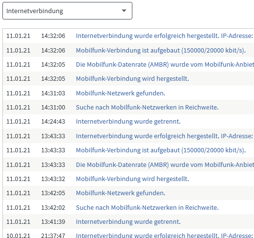
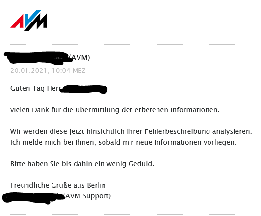
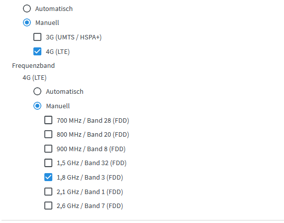
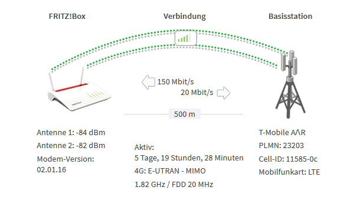
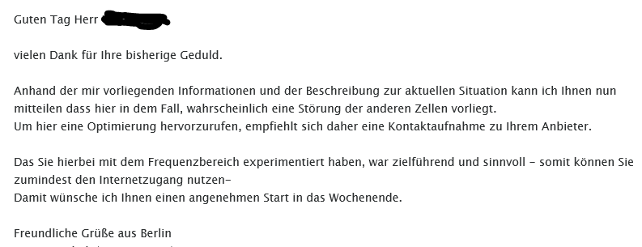

{kind=link}
{kind=link}
Danke! Passt.

Hallo
Wohne ca. 500 Meter vom Sender weg. Router steht im Dachgeschoss im nähesten Raum zum Sender. (Sichtverbindung durch Dachfenster)
Habe seit einiger Zeit das Problem das die LTE Verbindung abbricht und sich nach ca. 5 min erst wieder verbindet.
Router ist eine Fritzbox 6890 LTE.
Internet geht mal zwei Tage ohne Abruch - dann wieder zwei Abrüche binnen kurzer Zeit.

Hallo @jung376
Das hört sich nicht gut an. Hast du schon einen Resett durchgeführt oder die SIM Karte in ein anderes Gerät eingelegt?
Hallo Rexalius2000
Danke für deine Antwort.
Fritzbox hab ich schon einmal auf Werkseinstellungen zurückgesetzt. Sim könnte ich noch im alten Huawai B529S Modem testen - will aber eher die Fritzbox als Modem nutzen.
Bearbeitet von jung376Was passiert, wenn du die SIM im B529s verwendest? Treten auch dort Abbrüche der Verbindung auf? Wenn nein liegt es wahrscheinlich an deiner Fritz! Box.
Gute Idee!
Unbedingt einen Quercheck mit einer anderen HW versuchen, denn dann kann man den Fehler gut eingrenzen.
Hallo,
Danke für euere Antworten
Hab gestern auch gleich mit AVM-Support Kontakt aufgenommen.
ZitatSie schildern häufige Abbrüche der Internet/LTE-Verbindung Ihrer FRITZ!Box 6890 LTE.
Ihren Screenshots zufolge ist die Verbindung nicht "schlecht", scheint aber von der Gegenstelle häufig getrennt zu werden. Gibt es derzeit ggf. auch bei Ihnen eine corona-bedingte Überlastung des Netzes, das wäre beim Anbieter zu erfragen.
Die FRITZ!Box stellt ja "artig" die Verbindung immer wieder her, funktioniert also genere ll.
werde noch mal das alte Modem einbinden und ein paar Tage laufen lassen - melde mich am WE.
Dachte mir hier lesen Magenta Mitarbeiter mit und ich spare mir den Weg über die Hotline. Whatsapp Chat geht ja leider nicht mehr😢
Naja - vielleicht schaffen es wir ja auch 👍
vor 4 Minuten schrieb jung376:Dachte mir hier lesen Magenta Mitarbeiter mit und ich spare mir den Weg über die Hotline. Whatsapp Chat geht ja leider nicht mehr😢
Naja - vielleicht schaffen es wir ja auch 👍
Die Magenta Community ist nach dem Prinzip "User helfen User" aufgebaut. Technische Störungen oder Vertragsspezifische Anfragen können nur vom Magenta Support entgegengenommen werden. Stimmt,die Wartezeit an der Servieline ist derzeit leider ziemlich lange aber teste mal bitte wie empfohlen nochmals deinen alten Router. Alternativ kannst du auch Hier überprüfen ob eine Störung vorliegt.
Hi,
So kurze Rückmeldung vom Test. Hab die SIM jetzt 5 Tage im altem Modem getestet - ohne einen Verbindungsabruch - d.h. die Fritzbox macht hier Verbindungsabrüche.
Werde mich wieder mit AVM in Verbindung setzen - mein Ticket ist eh noch offen.
Was ist eure Meinung ist es eher ein Hardware oder ein Software Problem?
Was hast du für einen APN bei der Fritz!Box eingetragen?
business.gprsinternet sonst bekomm ich den Fernzugriff nicht hin. über VPN
Bearbeitet von jung376
Gibts dazu einen neuen Status?
Ich hätte dabei auf ein HW Problem getippt.
Hab gestern auf Anfrage von AVM den Standort des Senders, Standort der Fritzbox, Wohnadresse, LTE Versorgung, Mobilfunktarif
und die Supportdaten der Fritzbox ausgelesen und geschickt - heute Vormittag schon eine Antwort bekommen.
Support ist so gesehen echt in Ordnung und geht auch relativ schnell

Super! Das klingt gut.
Dann sind wir gespannt.
Werde euch auf jeden Fall am Laufenden halten - poste erst wieder wenn es was neues gibt
Danke! Passt.

Vermutlich ist es mit einem Austausch der Hardware getan.
Hi,
kurzes Update:
Habe die LTE Frequenz nur auf 1,8 Ghz bei der Fritzbox eingestellt ohne LTE Bündelung - seit fast 6 Tagen keine Unterbrechungen mehr.
Scheint eher ein SW Porblem bei der Bündelung der LTE Bänder zu sein. Schau ma mal was AVM dazu sagt.


Ah das ist spannend. Sowas hatte ich auch schon mal beim B525 und konnte es mir nicht erklären.
Wie sieht die Performance ohne Bündelung aus?
Versuch mal das LTE-Watch Tool und stell damit deine Fritz! Box auf LTE Advanced. Vielleicht hilft das.
Speedtests: mit Bündelung wenn's gut ging so ca.135Mbit/s mit Laptop im Wlan (5Ghz) neben FB
ohne Büdnelung war der bessere jetzt um die 105Mbit/s
schwankt teilweise stark hatte auch welche unter 40 dabei (Speedtest.net by Ookla)
LTE Watch funktioniert nicht bei der Labor - Firmware
Wie kann man bei LTE Watch die Fritzbox umstellen?
vor 3 Minuten schrieb jung376:Speedtests: mit Bündelung wenn's gut ging so ca.135Mbit/s mit Laptop im Wlan (5Ghz) neben FB
ohne Büdnelung war der bessere jetzt um die 105Mbit/s
schwankt teilweise stark hatte auch welche unter 40 dabei (Speedtest.net by Ookla)
Ist natürlich auch immer die Frage, wie die Auslastung gerade aussieht aber auch ohne Bündelung bekommst du noch richtig gute Werte.
Ich würde es mal beobachten.
vor 1 Minute schrieb jung376:LTE Watch funktioniert nicht bei der Labor - Firmware
Wie kann man bei LTE Watch die Fritzbox umstellen?
LTE Watch geht m.E. nur bei den Huawei's und ein paar anderen Modellen
Zitat:
Zu welchen Geräten ist das Tool kompatibel?
Zunächst einmal muss der Stick oder Router Hilink nutzen. Erfolgreich getestet wurde bisher mit der Speedbox III, Speedbox 4 (B529s) und Speedbox II mini von der Telekom.
Zudem der Huawei B528 (GigaCube), B818 (Gigacube CAT19), Huawei B525 (z.B. O2 Homespot), E5170s-22, E5186s-22, E5180 inklusive dem congstar LTE-Cube und dem E3276s-150. Hinter letzterem verbirgt sich die "Internetbox 4G/LTE" von A1 in Österreich. Und auch Vodafones R226 kompatibel. Aller Wahrscheinlichkeit nach wird es auch mit weiteren Modellen neueren Datums mit Hilink API funktionieren. Es gibt zudem diverse Surfsticks dieser Art.
Danke bin eh dabei und werde mich noch ein wenig rumspielen - ist ja eh genug Zeit im Lockdown

LTE Watch 1.5 funktionierte mit der FB bis zur Software 7.21 - habe zZ. aber die 7.24 Labor oben
Bearbeitet von jung376
Andere Frage:
Was ist der Grund für die Fritz Box? Was für Funktionen nutzt du da, die der alte Router nicht kann?
Mesh mit 2 Repeatern, Wlan Zeitschaltung, Kinder sperre (wenn es mal sein muß), teilweise Fernzugang zum VU (SatReciver),
bessere Übersicht übers Wlan (IP-Adressen), ...
Hallo
Wohne ca. 500 Meter vom Sender weg. Router steht im Dachgeschoss im nähesten Raum zum Sender. (Sichtverbindung durch Dachfenster)
Habe seit einiger Zeit das Problem das die LTE Verbindung abbricht und sich nach ca. 5 min erst wieder verbindet.
Router ist eine Fritzbox 6890 LTE.
Internet geht mal zwei Tage ohne Abruch - dann wieder zwei Abrüche binnen kurzer Zeit.
Alles klar. Ja diese Feinheiten kann die Standardbox nicht im Detail.
Ich hab für mich hinter dem Provider Modem einen ASUS RT-N66U Router, der auch alle Stückeln spielt.
Dann bin ich quasi unabhängig von Modem - das sowieso nie alles kann.
Hattest du mit der vorherigen Version auch Probleme oder ausschließlich mit der Labor?
Was meinst du mit Labor?
Denke mit der 7.20er hatte ich keine Probleme - sind mir nicht aufgefallen - hat glaub ich erst mit der 7.21er Version angefangen - bin mir aber nicht ganz sicher.
Labor - sind neue Software-Versionen aus der Entwicklung von AVM https://at.avm.de/fritz-labor/
Alles klar - Danke!
Hallo,
Fritzbox läuft jetzt seit 10 Tagen ohne Verbindungsabruch 👍
Heute ein Mail von AVM bekommen - weiß nicht was ich davon halten soll - was ist eure Meinung?
Zitat
Ich versteh nicht ganz auf was die raus wollen...
Aber wenn nun alles läuft, wird würde ich mal wieder beobachten.
m.M. wollen die sagen ein LTE Band hat keine stabile Sendeleistung bzw. fällt teilweise komplett aus. Könnte ja die anderen beiden einzeln testen (2100 und 800Mhz) - und auf die Antwort gespannnt sein. ( wird funktionieren )
Glaube die haben ein Problem mit der Bündelung in ihrer Software, meine Hoffnung liegt in den künftigen SW-Versionen.
Magenta zu kontaktieren wird nichts bringen.
Wenn Ihr wollt halte ich euch auf dem Laufenden - wenn nicht sag ich nocheinmal Danke für eure Antworten bzw. Unterstützung
Alles klar.
Gern geschehen und wäre trotzdem noch schön, wenn du uns am laufenden halten würdest.
LG Christian
Kurzes Update:
Frequenzen 1,8 und 2,1Ghz laufen ohne Bündelung (einzeln) abruchfrei getestet mind. eine Woche.
Bei 800 Mhz war mir die Verbindung zu langsam um es länger als 2 Tage zu testen (bekomme max.72M/bit lt. Fritzbox AMBR)
Gestern ist ein Update der Laborversion erschienen - gleich aufgespielt - 2 Frequenzen ausgewählt - heute Mittag wieder ein Verbindungsabruch😒
Warte was die nächsten Versionen so mit sich bringen.
Melde mich dann wieder wenn sich etwas tut.
lg.
An dieser Stelle eine Frage:
Ich hatte gestern bei meinem B525 auch einen Abbruch.
Allerdings hat mein Router zu diesem Zeitpunkt gar nichts empfangen, erst als ich ihn aus und eingeschaltet habe, lief wieder alles problemlos.
Bei deinen Abbrüchen - hattest du da so ein Phänomen auch beobachten können?
Hatte diese Verbindungsabbrüche bei Internetnutzung - dauerte teilweise etwas länger bis es wieder verbunden war aber Fritzbox musste ich nicht neustarten.
Nehme an die Abbrüche sind bei mir bei der Bündelung der Bänder.
OK...
Dann konnte ich gestern bei mir was anderes beobachten. Danke für die Rückmeldung.
Hallo,
kurzes Update von meiner Seite:
Zwischendurch einige Mails mit mit dem Frtiz-Support - Paketmitschnitte - habe aber den Fehler nie aufzeichnen können.
Support von AVM ist hier recht bemüht.
Am Samstag 5.6. ist eine neues Laporupdate für meine FritzBox gekommen - und seit dem läuft mein Internet (5 Tage) auf beiden Frequenzen gebündelt ohne Abbruch - war eh ein langer Weg - aber jetz schaut es gut aus.

mfg.
Jung376
Bearbeitet von jung376
Super. Klingt gut.
Danke für die Info.
LG Christian